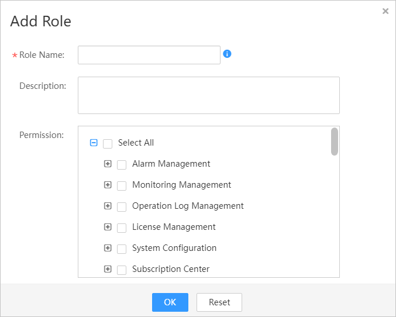
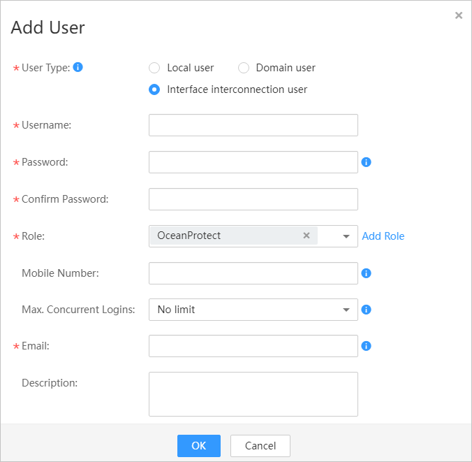

This section describes how to create a user for interconnecting FusionOne Compute to the OceanProtect.
Procedure
- Log in to FusionOne Compute.
- Create a role on the FusionOne Compute management page. This role is used to create an account for interconnecting with the OceanProtect.
- Click in the navigation pane and choose System > Rights Management > Role Management.
- Click Add Role.
- Enter the role information. See Figure 1.
Figure 1 Adding a role
- Click OK.
- On the FusionOne Compute management page, create an account for interconnecting with the OceanProtect.
- Choose System > Rights Management > User Management.
- Click Add User.
- Enter the user information. See Figure 2.
- User Type: Select Interface interconnection user.
- Role: Select OceanProtect.
Figure 2 Creating an interface interconnection user
- Click OK.
- Choose System > Rights Management > Password Policy.
- In the left corner of the Password Policy page, click Modify.
- Change the value of Forcibly change passwords upon a reset or initial login. to No.
- Click Save.
Copyright © Huawei Technologies Co., Ltd.